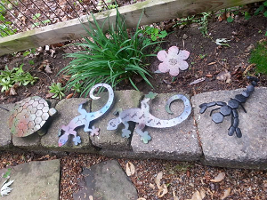
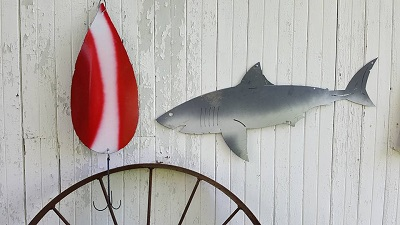
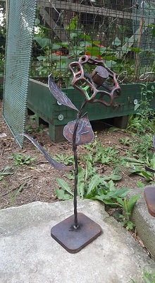
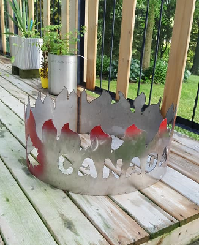
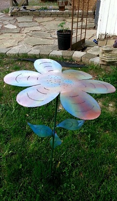
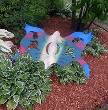
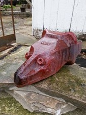

Metalworking is the process of working with metals to create individual parts, assemblies, or large-scale structures. The term covers a wide range of work from large ships and bridges to precise engine parts and delicate jewelry. It therefore includes a correspondingly wide range of skills, processes, and tools. Metalworking is a science, art,[1][2] hobby, industry and trade. Its historical roots span cultures, civilizations, and millennia. Metalworking has evolved from the discovery of smelting various ores, producing malleable and ductile metal useful tools and adornments. Modern metalworking processes, though diverse and specialized, can be categorized as forming, cutting, or joining processes. Today's machine shop includes a number of machine tools capable of creating a precise, useful workpiece.